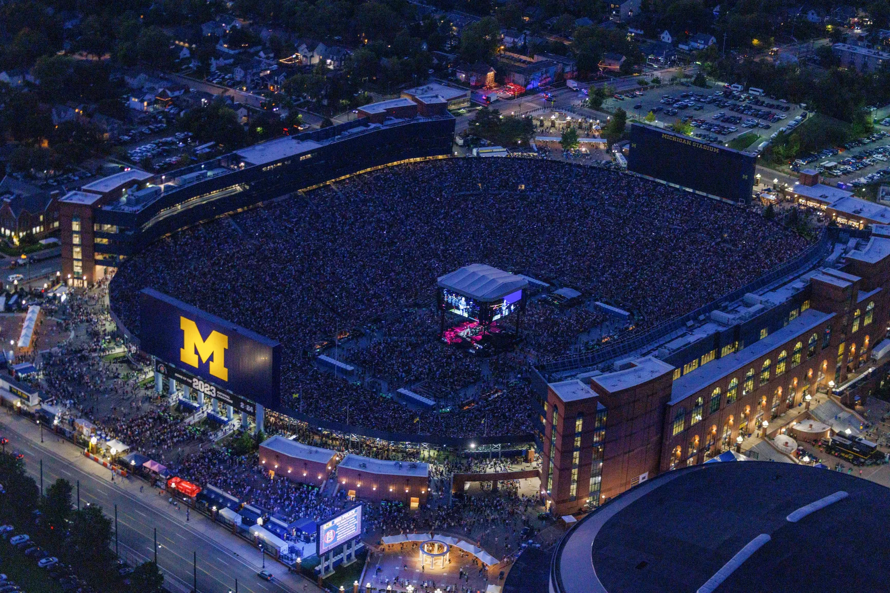

My roommate and I had a blast playing Wii Golf last weekend. It was a great way to unwind and have some friendly competition. I don't realize how much fun virtual golf could be until we started playing. The graphics were surprisingly good, and the motion controls made it feel like we were actually swinging a club. We played several rounds, and I managed to win a couple of times, which was a nice surprise. Overall, it was a fantastic experience that I would highly recommend to anyone looking for a fun and interactive way to spend their time.
Our golf scores
Round
Noah
John
1
Win
Loss
2
Loss
Win
3
Loss
Win
Zach Bryan Concert Review
•
Noah Gleason

Zach Bryan in concert
I had the opportunity to attend a Zach Bryan concert last weekend, and it was an unforgettable experience. The energy in the venue was electric, and Zach's performance was nothing short of amazing. He played a mix of his popular songs and some new material, showcasing his incredible talent as a songwriter and musician. The crowd was super into it and I felt like for the majority of the songs everyone knew all the words. One of the highlights of the night was when he performed his hit song "Something in the Orange," which brought the a lot of emotion to the crowd. Overall, it was a night filled with great music, emotional moments, and a deep appreciation for the artistry of Zach Bryan.
It being at the Big House made it even better. I had no real expectations going in, but the atmosphere was incredible. The venue was packed, and everyone was there to have a good time. I would love to see him perform again in the future.